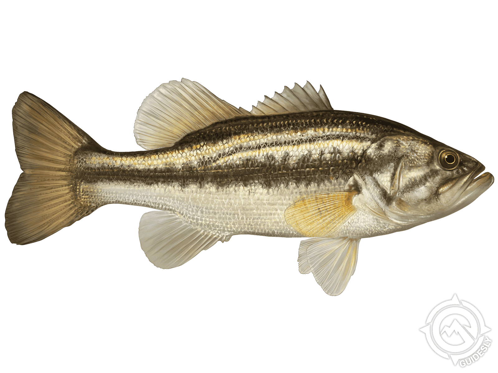

a powerful freshwater predator and one of North America’s most iconic game fish.
Habitat
Largemouth bass live in freshwater lakes, rivers, and ponds across the United States, especially in warm, slow-moving waters with abundant vegetation.
Key Features
- Large mouth extending past the eye
- Olive-green body with dark horizontal stripe
- Top predator in freshwater ecosystems
- Highly popular in sport fishing
- Adaptable to a wide range of freshwater habitats